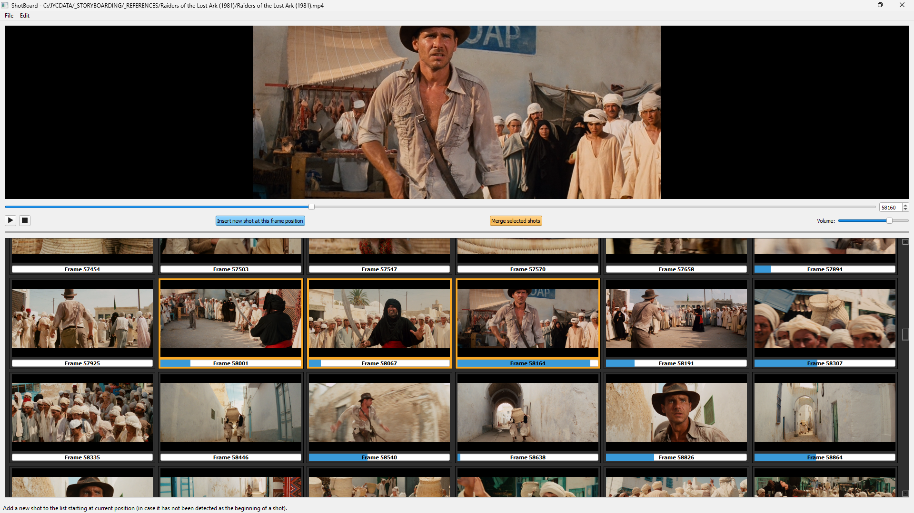

ShotBoard v0.2.0
For Windows 10+ and Linux (not sure about Mac, feel free to try).
ShotBoard: Visualize Movies Shot by Shot
ShotBoard is a Python application designed for filmmakers, editors, storyboarders, and enthusiasts who want to explore the structural breakdown of a movie.
- Open a movie file (MP4) and detect its individual shots automatically.
- Display those shots as thumbnails in a grid-style storyboard for quick navigation.
- Hover over thumbnails to preview the corresponding shots instantly.
ShotBoard offers a seamless way to analyze shot composition, pacing, and transitions in any MP4 video file.

Installation
Install ffmpeg
ffmpeg is required for video processing. Follow these steps:
- Download ffmpeg from the official website.
- Extract the downloaded ZIP file to a folder (e.g.,
C:\ffmpeg).
- Add the
bin folder to your PATH environment variable.
- Verify installation by running
ffmpeg --version in the command prompt.
Install Python 3.10.6
- Download Python from the official website.
- Install Python and ensure the
Add Python to PATH option is selected.
- Verify installation by running
python --version.
Install Necessary Dependencies
- Run
pip install PyQt5 opencv-python ffmpeg-python numpy in the terminal.
- Verify installation by running
pip show for each package.
User Guide: How to Use ShotBoard
Opening a Video File
Click File > Open Video to open a video file.
Navigating Through the Video
- Left/Right Arrow: Move backward/forward by 1 frame.
- Shift + Arrow: Move by 5 frames.
- Ctrl + Arrow: Move by 1 second.
- Alt + Arrow: Move by 10 seconds.
Scanning and Detecting Shots
Click Edit > Scan Shots to detect shots automatically.
Saving and Opening Shot Lists
- Save: Click File > Save.
- Open: Click File > Open Shot List.
Visualizing Shots
Hover over thumbnails to preview shots; thumbnails animate as long as you hover.
Correcting Shot Detection Errors
- Add a New Shot: Use the slider to position and click Insert new shot starting at this frame.
- Merge Shots: Select shots and click Merge selected shots.